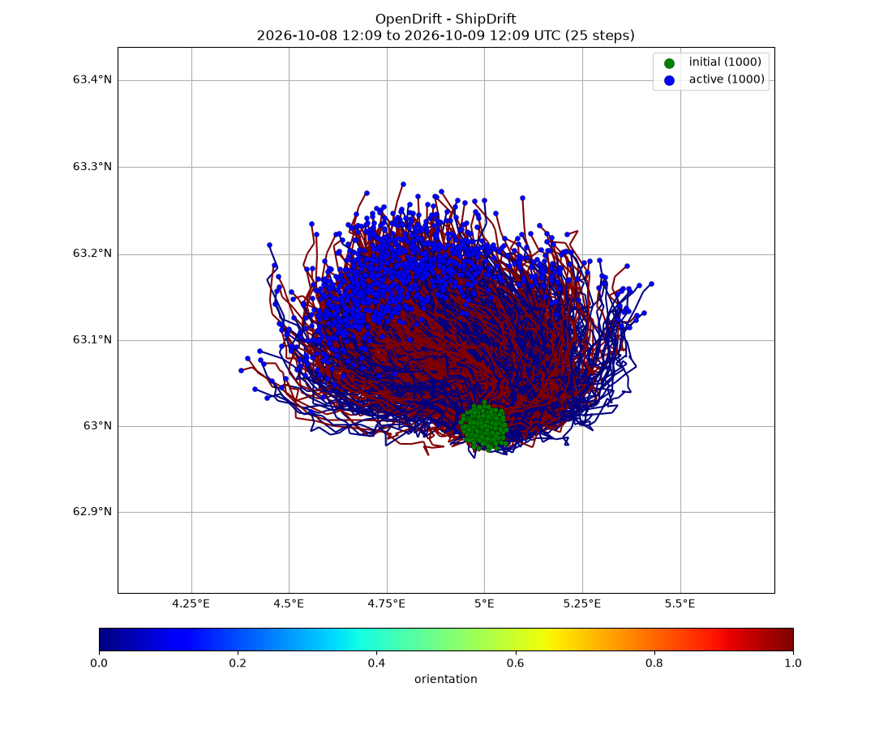
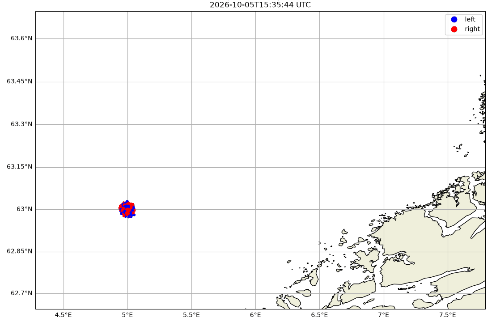

Note
Go to the end to download the full example code.
Ship drift
from datetime import datetime
from opendrift.models.shipdrift import ShipDrift
o = ShipDrift(loglevel=20)
o.add_readers_from_list([
'https://thredds.met.no/thredds/dodsC/cmems/topaz6/dataset-topaz6-arc-15min-3km-be.ncml',
'https://thredds.met.no/thredds/dodsC/mepslatest/meps_lagged_6_h_latest_2_5km_latest.nc',
'https://thredds.met.no/thredds/dodsC/cmems/mywavewam3km/dataset-wam-arctic-1hr3km-be.ncml'
])
15:35:44 INFO opendrift:569: OpenDriftSimulation initialised (version 1.14.11 / v1.14.12-32-g22db1c0)
Seed ship elements at defined position and time Note: beam/length ratio is larger than allowed, but is then clipped internally
o.seed_elements(lon=5.0, lat=63.0, radius=1000, number=1000,
time=datetime.now(),
length=80.0, beam=20.0, height=9.0, draft=4.0)
15:35:44 WARNING opendrift.models.shipdrift:180: Ratio of beam to length should be in range 0.12 to 0.18, given range is 0.25-0.25. Using border value.
15:35:44 INFO opendrift.models.basemodel.environment:203: Adding a global landmask from GSHHG
15:35:51 INFO opendrift.models.basemodel.environment:227: Fallback values will be used for the following variables which have no readers:
15:35:51 INFO opendrift.models.basemodel.environment:230: horizontal_diffusivity: 100.000000
15:35:51 INFO opendrift.models.basemodel.environment:230: sea_surface_wave_stokes_drift_x_velocity: 0.000000
15:35:51 INFO opendrift.models.basemodel.environment:230: sea_surface_wave_stokes_drift_y_velocity: 0.000000
15:35:51 INFO opendrift.models.basemodel.environment:230: sea_surface_wave_significant_height: 0.000000
15:35:51 INFO opendrift.models.basemodel.environment:230: sea_surface_wave_mean_period_from_variance_spectral_density_second_frequency_moment: 0.000000
Running model
o.run(steps=24, stop_on_error=True)
15:35:51 INFO opendrift:1921: Storing previous values of element property lon because of condition (('general:coastline_action', 'in', ['stranding', 'previous']), 'or', ('general:seafloor_action', 'in', ['previous']))
15:35:51 INFO opendrift:1921: Storing previous values of element property lat because of condition (('general:coastline_action', 'in', ['stranding', 'previous']), 'or', ('general:seafloor_action', 'in', ['previous']))
15:35:51 INFO opendrift:958: Using existing reader for land_binary_mask to move elements to ocean
15:35:51 INFO opendrift:989: All points are in ocean
15:35:51 INFO opendrift:2237: 2026-10-05 15:35:44.435172 - step 1 of 24 - 1000 active elements (0 deactivated)
15:35:51 INFO opendrift.readers:67: Opening file with xr.open_dataset
15:35:56 INFO opendrift.readers.reader_netCDF_CF_generic:340: Detected dimensions: {'x': 'x', 'y': 'y', 'time': 'time'}
15:35:56 INFO opendrift.readers:67: Opening file with xr.open_dataset
15:35:57 INFO opendrift.readers.reader_netCDF_CF_generic:340: Detected dimensions: {'time': 'time', 'x': 'x', 'y': 'y'}
15:35:57 INFO opendrift.readers:67: Opening file with xr.open_dataset
15:36:01 INFO opendrift.readers.reader_netCDF_CF_generic:340: Detected dimensions: {'y': 'rlat', 'x': 'rlon', 'time': 'time'}
15:36:02 WARNING opendrift.readers.interpolation.structured:63: Ensemble data currently not extrapolated towards seafloor
15:36:02 WARNING opendrift.readers.interpolation.structured:63: Ensemble data currently not extrapolated towards seafloor
15:36:03 WARNING opendrift.readers.interpolation.structured:63: Ensemble data currently not extrapolated towards seafloor
15:36:03 WARNING opendrift.readers.interpolation.structured:63: Ensemble data currently not extrapolated towards seafloor
15:36:04 INFO opendrift.models.shipdrift:310: Using Stokes drift direction as wave direction
15:36:04 INFO opendrift:2237: 2026-10-05 16:35:44.435172 - step 2 of 24 - 1000 active elements (0 deactivated)
15:36:05 WARNING opendrift.readers.interpolation.structured:63: Ensemble data currently not extrapolated towards seafloor
15:36:05 WARNING opendrift.readers.interpolation.structured:63: Ensemble data currently not extrapolated towards seafloor
15:36:06 INFO opendrift.models.shipdrift:310: Using Stokes drift direction as wave direction
15:36:06 INFO opendrift:2237: 2026-10-05 17:35:44.435172 - step 3 of 24 - 1000 active elements (0 deactivated)
15:36:07 WARNING opendrift.readers.interpolation.structured:63: Ensemble data currently not extrapolated towards seafloor
15:36:07 WARNING opendrift.readers.interpolation.structured:63: Ensemble data currently not extrapolated towards seafloor
15:36:07 INFO opendrift.models.shipdrift:310: Using Stokes drift direction as wave direction
15:36:07 INFO opendrift:2237: 2026-10-05 18:35:44.435172 - step 4 of 24 - 1000 active elements (0 deactivated)
15:36:08 WARNING opendrift.readers.interpolation.structured:63: Ensemble data currently not extrapolated towards seafloor
15:36:08 WARNING opendrift.readers.interpolation.structured:63: Ensemble data currently not extrapolated towards seafloor
15:36:09 INFO opendrift.models.shipdrift:310: Using Stokes drift direction as wave direction
15:36:09 INFO opendrift:2237: 2026-10-05 19:35:44.435172 - step 5 of 24 - 1000 active elements (0 deactivated)
15:36:10 WARNING opendrift.readers.interpolation.structured:63: Ensemble data currently not extrapolated towards seafloor
15:36:10 WARNING opendrift.readers.interpolation.structured:63: Ensemble data currently not extrapolated towards seafloor
15:36:10 INFO opendrift.models.shipdrift:310: Using Stokes drift direction as wave direction
15:36:10 INFO opendrift:2237: 2026-10-05 20:35:44.435172 - step 6 of 24 - 1000 active elements (0 deactivated)
15:36:11 WARNING opendrift.readers.interpolation.structured:63: Ensemble data currently not extrapolated towards seafloor
15:36:11 WARNING opendrift.readers.interpolation.structured:63: Ensemble data currently not extrapolated towards seafloor
15:36:12 INFO opendrift.models.shipdrift:310: Using Stokes drift direction as wave direction
15:36:12 INFO opendrift:2237: 2026-10-05 21:35:44.435172 - step 7 of 24 - 1000 active elements (0 deactivated)
15:36:13 WARNING opendrift.readers.interpolation.structured:63: Ensemble data currently not extrapolated towards seafloor
15:36:13 WARNING opendrift.readers.interpolation.structured:63: Ensemble data currently not extrapolated towards seafloor
15:36:13 INFO opendrift.models.shipdrift:310: Using Stokes drift direction as wave direction
15:36:13 INFO opendrift:2237: 2026-10-05 22:35:44.435172 - step 8 of 24 - 1000 active elements (0 deactivated)
15:36:14 WARNING opendrift.readers.interpolation.structured:63: Ensemble data currently not extrapolated towards seafloor
15:36:14 WARNING opendrift.readers.interpolation.structured:63: Ensemble data currently not extrapolated towards seafloor
15:36:15 INFO opendrift.models.shipdrift:310: Using Stokes drift direction as wave direction
15:36:15 INFO opendrift:2237: 2026-10-05 23:35:44.435172 - step 9 of 24 - 1000 active elements (0 deactivated)
15:36:16 WARNING opendrift.readers.interpolation.structured:63: Ensemble data currently not extrapolated towards seafloor
15:36:16 WARNING opendrift.readers.interpolation.structured:63: Ensemble data currently not extrapolated towards seafloor
15:36:17 INFO opendrift.models.shipdrift:310: Using Stokes drift direction as wave direction
15:36:17 INFO opendrift:2237: 2026-10-06 00:35:44.435172 - step 10 of 24 - 1000 active elements (0 deactivated)
15:36:18 WARNING opendrift.readers.interpolation.structured:63: Ensemble data currently not extrapolated towards seafloor
15:36:18 WARNING opendrift.readers.interpolation.structured:63: Ensemble data currently not extrapolated towards seafloor
15:36:19 INFO opendrift.models.shipdrift:310: Using Stokes drift direction as wave direction
15:36:19 INFO opendrift:2237: 2026-10-06 01:35:44.435172 - step 11 of 24 - 1000 active elements (0 deactivated)
15:36:20 WARNING opendrift.readers.interpolation.structured:63: Ensemble data currently not extrapolated towards seafloor
15:36:20 WARNING opendrift.readers.interpolation.structured:63: Ensemble data currently not extrapolated towards seafloor
15:36:21 INFO opendrift.models.shipdrift:310: Using Stokes drift direction as wave direction
15:36:21 INFO opendrift:2237: 2026-10-06 02:35:44.435172 - step 12 of 24 - 1000 active elements (0 deactivated)
15:36:22 WARNING opendrift.readers.interpolation.structured:63: Ensemble data currently not extrapolated towards seafloor
15:36:22 WARNING opendrift.readers.interpolation.structured:63: Ensemble data currently not extrapolated towards seafloor
15:36:23 INFO opendrift.models.shipdrift:310: Using Stokes drift direction as wave direction
15:36:23 INFO opendrift:2237: 2026-10-06 03:35:44.435172 - step 13 of 24 - 1000 active elements (0 deactivated)
15:36:24 WARNING opendrift.readers.interpolation.structured:63: Ensemble data currently not extrapolated towards seafloor
15:36:24 WARNING opendrift.readers.interpolation.structured:63: Ensemble data currently not extrapolated towards seafloor
15:36:24 INFO opendrift.models.shipdrift:310: Using Stokes drift direction as wave direction
15:36:24 INFO opendrift:2237: 2026-10-06 04:35:44.435172 - step 14 of 24 - 1000 active elements (0 deactivated)
15:36:25 WARNING opendrift.readers.interpolation.structured:63: Ensemble data currently not extrapolated towards seafloor
15:36:25 WARNING opendrift.readers.interpolation.structured:63: Ensemble data currently not extrapolated towards seafloor
15:36:26 INFO opendrift.models.shipdrift:310: Using Stokes drift direction as wave direction
15:36:26 INFO opendrift:2237: 2026-10-06 05:35:44.435172 - step 15 of 24 - 1000 active elements (0 deactivated)
15:36:27 WARNING opendrift.readers.interpolation.structured:63: Ensemble data currently not extrapolated towards seafloor
15:36:27 WARNING opendrift.readers.interpolation.structured:63: Ensemble data currently not extrapolated towards seafloor
15:36:28 INFO opendrift.models.shipdrift:310: Using Stokes drift direction as wave direction
15:36:28 INFO opendrift:2237: 2026-10-06 06:35:44.435172 - step 16 of 24 - 1000 active elements (0 deactivated)
15:36:29 WARNING opendrift.readers.interpolation.structured:63: Ensemble data currently not extrapolated towards seafloor
15:36:29 WARNING opendrift.readers.interpolation.structured:63: Ensemble data currently not extrapolated towards seafloor
15:36:29 INFO opendrift.models.shipdrift:310: Using Stokes drift direction as wave direction
15:36:29 INFO opendrift:2237: 2026-10-06 07:35:44.435172 - step 17 of 24 - 1000 active elements (0 deactivated)
15:36:30 WARNING opendrift.readers.interpolation.structured:63: Ensemble data currently not extrapolated towards seafloor
15:36:30 WARNING opendrift.readers.interpolation.structured:63: Ensemble data currently not extrapolated towards seafloor
15:36:31 INFO opendrift.models.shipdrift:310: Using Stokes drift direction as wave direction
15:36:31 INFO opendrift:2237: 2026-10-06 08:35:44.435172 - step 18 of 24 - 1000 active elements (0 deactivated)
15:36:32 WARNING opendrift.readers.interpolation.structured:63: Ensemble data currently not extrapolated towards seafloor
15:36:32 WARNING opendrift.readers.interpolation.structured:63: Ensemble data currently not extrapolated towards seafloor
15:36:33 INFO opendrift.models.shipdrift:310: Using Stokes drift direction as wave direction
15:36:33 INFO opendrift:2237: 2026-10-06 09:35:44.435172 - step 19 of 24 - 1000 active elements (0 deactivated)
15:36:34 WARNING opendrift.readers.interpolation.structured:63: Ensemble data currently not extrapolated towards seafloor
15:36:34 WARNING opendrift.readers.interpolation.structured:63: Ensemble data currently not extrapolated towards seafloor
15:36:34 INFO opendrift.models.shipdrift:310: Using Stokes drift direction as wave direction
15:36:34 INFO opendrift:2237: 2026-10-06 10:35:44.435172 - step 20 of 24 - 1000 active elements (0 deactivated)
15:36:36 WARNING opendrift.readers.interpolation.structured:63: Ensemble data currently not extrapolated towards seafloor
15:36:36 WARNING opendrift.readers.interpolation.structured:63: Ensemble data currently not extrapolated towards seafloor
15:36:36 INFO opendrift.models.shipdrift:310: Using Stokes drift direction as wave direction
15:36:36 INFO opendrift:2237: 2026-10-06 11:35:44.435172 - step 21 of 24 - 1000 active elements (0 deactivated)
15:36:37 WARNING opendrift.readers.interpolation.structured:63: Ensemble data currently not extrapolated towards seafloor
15:36:37 WARNING opendrift.readers.interpolation.structured:63: Ensemble data currently not extrapolated towards seafloor
15:36:38 INFO opendrift.models.shipdrift:310: Using Stokes drift direction as wave direction
15:36:38 INFO opendrift:2237: 2026-10-06 12:35:44.435172 - step 22 of 24 - 1000 active elements (0 deactivated)
15:36:39 WARNING opendrift.readers.interpolation.structured:63: Ensemble data currently not extrapolated towards seafloor
15:36:39 WARNING opendrift.readers.interpolation.structured:63: Ensemble data currently not extrapolated towards seafloor
15:36:40 INFO opendrift.models.shipdrift:310: Using Stokes drift direction as wave direction
15:36:40 INFO opendrift:2237: 2026-10-06 13:35:44.435172 - step 23 of 24 - 1000 active elements (0 deactivated)
15:36:41 WARNING opendrift.readers.interpolation.structured:63: Ensemble data currently not extrapolated towards seafloor
15:36:41 WARNING opendrift.readers.interpolation.structured:63: Ensemble data currently not extrapolated towards seafloor
15:36:42 INFO opendrift.models.shipdrift:310: Using Stokes drift direction as wave direction
15:36:42 INFO opendrift:2237: 2026-10-06 14:35:44.435172 - step 24 of 24 - 1000 active elements (0 deactivated)
15:36:43 WARNING opendrift.readers.interpolation.structured:63: Ensemble data currently not extrapolated towards seafloor
15:36:43 WARNING opendrift.readers.interpolation.structured:63: Ensemble data currently not extrapolated towards seafloor
15:36:43 INFO opendrift.models.shipdrift:310: Using Stokes drift direction as wave direction
Print and plot results
print(o)
o.plot(linecolor='orientation')
#o.animation(color='orientation', markersize=20, filename="orientation.gif", legend=['left','right'],colorbar=False,cmap='bwr')
o.animation(color='orientation', legend=['left','right'], markersize=20, colorbar=False, cmap='bwr')

===========================
--------------------
Reader performance:
--------------------
global_landmask
0:00:00.0 total
0:00:00.0 preparing
0:00:00.0 reading
0:00:00.0 masking
--------------------
https://thredds.met.no/thredds/dodsC/cmems/topaz6/dataset-topaz6-arc-15min-3km-be.ncml
0:00:14.1 total
0:00:00.0 preparing
0:00:14.0 reading
0:00:00.0 interpolation
0:00:00.0 interpolation_time
0:00:00.0 rotating vectors
0:00:00.0 masking
--------------------
https://thredds.met.no/thredds/dodsC/mepslatest/meps_lagged_6_h_latest_2_5km_latest.nc
0:00:13.3 total
0:00:00.0 preparing
0:00:13.2 reading
0:00:00.3 interpolation
0:00:00.0 interpolation_time
0:00:00.0 rotating vectors
0:00:00.0 masking
--------------------
https://thredds.met.no/thredds/dodsC/cmems/mywavewam3km/dataset-wam-arctic-1hr3km-be.ncml
0:00:13.5 total
0:00:00.0 preparing
0:00:13.5 reading
0:00:00.0 interpolation
0:00:00.0 interpolation_time
0:00:00.0 rotating vectors
0:00:00.0 masking
--------------------
Performance:
59.5 total time
6.8 configuration
0.3 preparing main loop
0.0 moving elements to ocean
52.3 main loop
0.5 updating elements
0.0 cleaning up
--------------------
===========================
Model: ShipDrift (OpenDrift version 1.14.11)
1000 active ShipObject particles (0 deactivated, 0 scheduled)
-------------------
Environment variables:
-----
land_binary_mask
1) global_landmask
-----
x_sea_water_velocity
y_sea_water_velocity
1) https://thredds.met.no/thredds/dodsC/cmems/topaz6/dataset-topaz6-arc-15min-3km-be.ncml
-----
x_wind
y_wind
1) https://thredds.met.no/thredds/dodsC/mepslatest/meps_lagged_6_h_latest_2_5km_latest.nc
-----
sea_surface_wave_mean_period_from_variance_spectral_density_second_frequency_moment
sea_surface_wave_significant_height
sea_surface_wave_stokes_drift_x_velocity
sea_surface_wave_stokes_drift_y_velocity
1) https://thredds.met.no/thredds/dodsC/cmems/mywavewam3km/dataset-wam-arctic-1hr3km-be.ncml
-----
Readers not added for the following variables:
horizontal_diffusivity
Discarded readers:
Time:
Start: 2026-10-05 15:35:44.435172 UTC
Present: 2026-10-06 15:35:44.435172 UTC
Calculation steps: 24 * 1:00:00 - total time: 1 day, 0:00:00
Output steps: 25 * 1:00:00
===========================
15:37:09 INFO opendrift:4823: Saving animation to /root/project/docs/source/gallery/animations/example_shipdrift_0.gif...
15:37:17 INFO opendrift:3241: Time to make animation: 0:00:09.743767

Total running time of the script: (1 minutes 42.985 seconds)